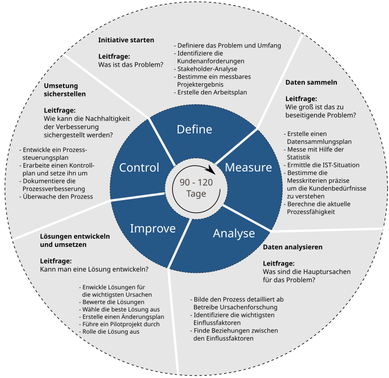

Qualitätsmanagement
Six Sigma ist eine datengestützte Methodik zur Verbesserung von Geschäftsprozessen durch Minimierung von Fehlern und Variabilität. Ursprünglich in der Fertigung entwickelt, wurde es inzwischen in verschiedenen Branchen, einschließlich der IT, eingeführt, um Effizienz zu steigern, Fehler zu reduzieren und die Servicequalität zu verbessern.
Es basiert sehr stark auf dem PDCA-Zyklus passt diesen an.
Der Name Six Sigma stammt aus der Statistik und bezieht sich auf die Standardabweichung (σ, gesprochen "Sigma") in einem Prozess. Eine hohe Sigma-Stufe bedeutet, dass ein Prozess sehr stabil ist und nur wenige Fehler aufweist. Das Ziel von Six Sigma ist es, Prozesse so zu verbessern, dass sie innerhalb der definierten Toleranzgrenzen liegen und weniger als 3,4 Fehler pro eine Million Möglichkeiten auftreten.
Beispiel: Stell dir vor, du arbeitest in einer IT-Abteilung, die eine maximale Antwortzeit von 2 Sekunden für eine Webseite garantieren möchte. Die durchschnittliche Ladezeit liegt bei 1,5 Sekunden, aber es gibt Abweichungen. Wenn die meisten Ladezeiten zwischen 1,4 und 1,6 Sekunden liegen, ist die Standardabweichung gering und der Prozess stabil. Falls jedoch einige Seiten 3 oder 4 Sekunden zum Laden brauchen, ist die Standardabweichung hoch und Optimierungen sind notwendig, um innerhalb der Toleranzgrenzen zu bleiben.

Abbildung 1: Von C64zottel - Eigenes Werk, CC BY-SA 4.0
Ein strukturierter Ansatz neuer Prozesse
Ein strukturierter Ansatz zur Prozessverbesserung.
Total Quality Management (TQM) ist ein umfassender Managementansatz, der darauf abzielt, die Qualität von Produkten, Dienstleistungen und Prozessen in einer Organisation kontinuierlich zu verbessern. Der Fokus liegt auf der Einbindung aller Mitarbeiter und der Optimierung der gesamten Wertschöpfungskette.